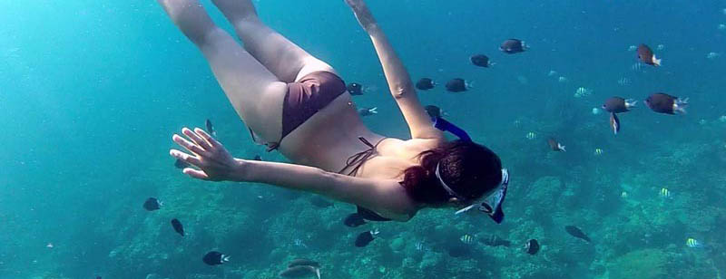

Learn to snorkel and skin dive!
Explore the underwater world from the surface.
The PADI Skin Diver certification helps you get - and keep - your fins wet. While snorkeling is limited to peering down from the surface, skin divers generally venture further than snorkelers, making frequent surface dives to interact with aquatic life, up close and personal.
What You Learn.
The course provides basic information on skin diving equipment, dive science, the environment, problem management and safe skin diving practices.
Inwater training includes various techniques for donning and adjusting equipment, entering the water, checking buoyancy, surface swimming, clearing water from your snorkel and performing effortless surface dives.

Prerequisites.
- To enroll in the PADI Skin Diver course, you must be:
- At least eight years old.
- Comfortable in the water.
The Fun Part.
The best part is learning to use your mask, fins and snorkel so you don't miss a moment of underwater action. Whether you're looking at your local freshwater lake or the big blue ocean, you’ll have a new perspective on just about every body of water. You can use your new aquatic skills to explore a brand new world during an optional open water dive. And, when you’ve finished the course, you’ll get a PADI Skin Diver certification card for your efforts and be ready for your next adventure.
The Gear You Use
The PADI Skin Diver course teaches you to use basic snorkeling equipment including a mask, snorkel, fins, buoyancy control device (BCD), exposure protection like a wet suit and dive weights as needed.
The Learning Materials You Need
The PADI Skin Diver course doesn't have any required materials, but you'll enjoy the PADI Discover the Underwater World video. The video covers all of the great reasons to jump in and includes tips that will come in handy once you hit the water. A companion piece is The Snorkeler’s Field Guide. This handy booklet illustrates various underwater environments along with their common aquatic life.